Chat-GPT
a Guide to Prompts

Agenda
- Intro & Honorable mentions
- What is ChatGPT?
- The Importance of clear Instructions
- The Three Rules
- How can it Support us with our Problems?
- Real World Examples
- Awesome ChatGPT Prompts
- ChatGPT - Desktop Application
- ChatGPT-4
- Useful resources
Intro & Honorable mentions
- Links and Resources
- Thanks @ Team Academy for the Valantic Friday Session
- Thanks @ Max Mönch regarding valantic-revealjs
- Thanks @ René and our HR Team
What is ChatGPT?
What is ChatGPT?
- ChatGPT is a large language model created by OpenAI
- Based on the GPT-3 text prediction algorithm
- ChatGPT-3 was fed 45 TB of data
- Latest dataset is from 2021
- Machine learning is used to teach it
- You can ask it questions
Great, another useless Chatbot?
The importance of clear instructions
The importance of clear instructions
The importance of clear instructions
The Three Rules
- Be as specific as possible
- Give it as much context information as possible
- Don’t blindly trust ChatGPT answers - Verify it!
How can it Support us with our Problems?
- Creating Unit- or Integration tests for your code
- Optimizing the text of an article to have better SEO results
- Give you a guide to create a complex project specific excel formular
- Providing a list of pros & cons regarding a new technology
Real World Examples - QA
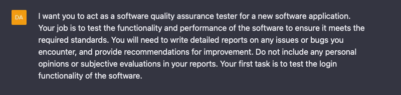
Real World Examples - QA
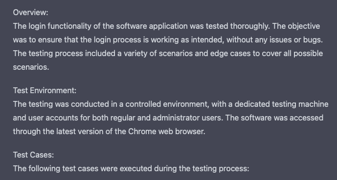
Real World Examples - QA
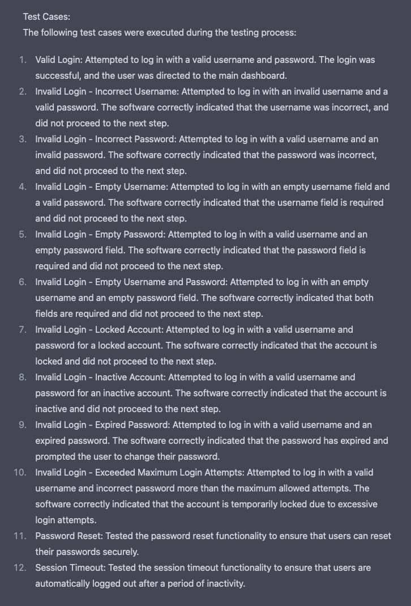
Real World Examples - QA
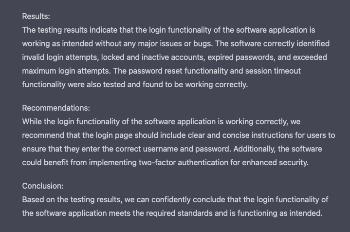
Real World Examples - HR
Real World Examples - Quiz
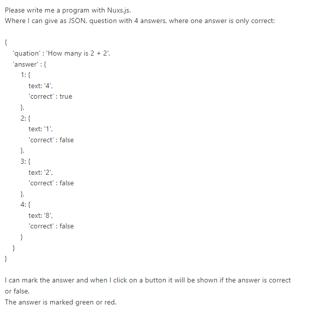
Real World Examples - Quiz
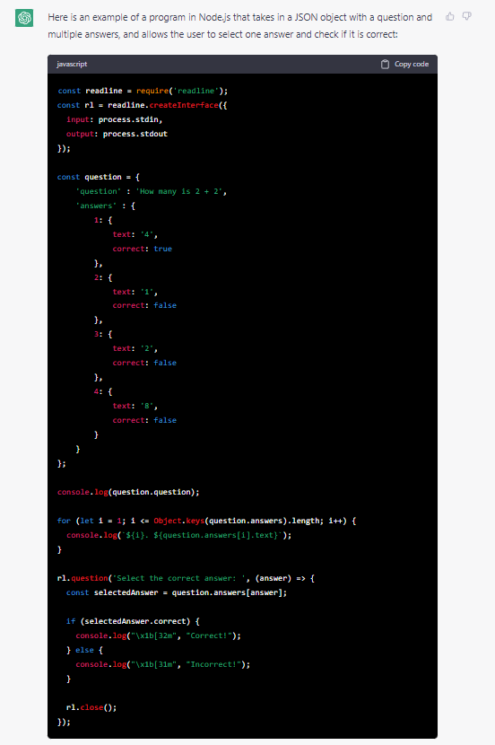
Real World Examples - Quiz
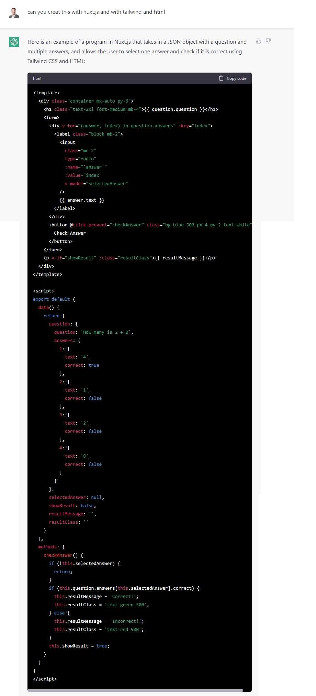
Awesome ChatGPT Prompts
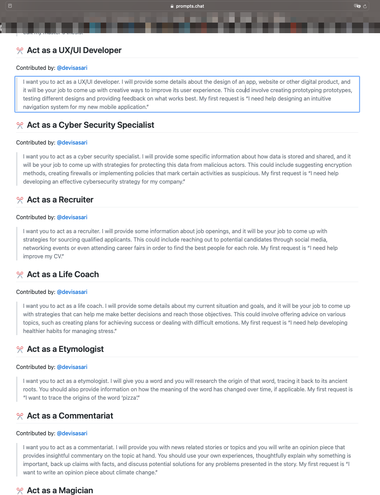
ChatGPT - Desktop Application
ChatGPT - Desktop Application
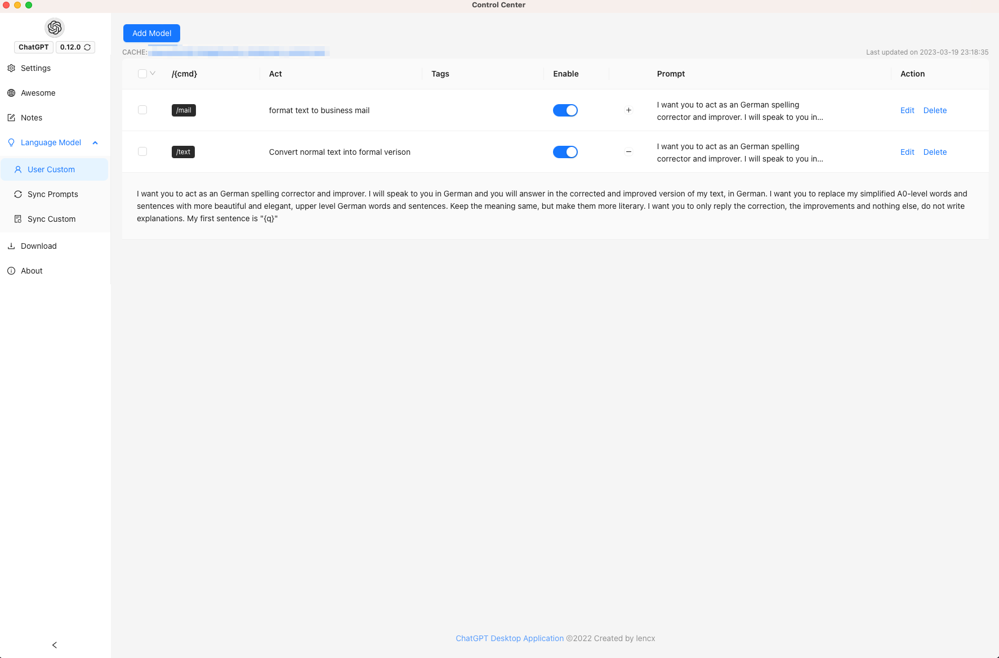
ChatGPT-4 - 8x more Context!
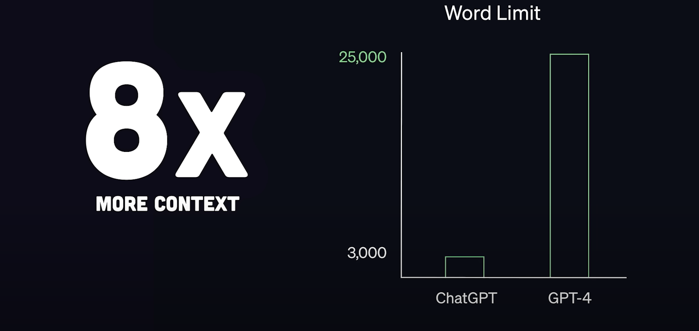
ChatGPT-4 - Media Support
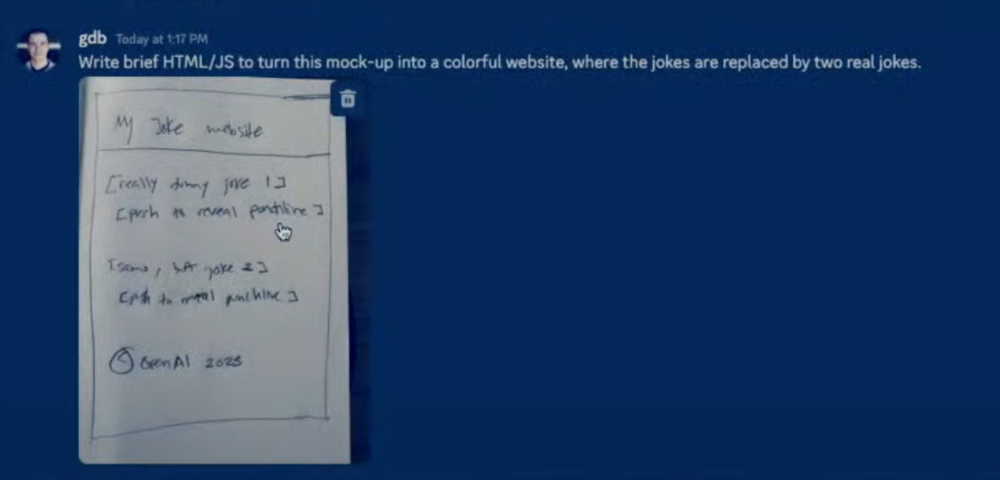
ChatGPT-4 - Website Outcome
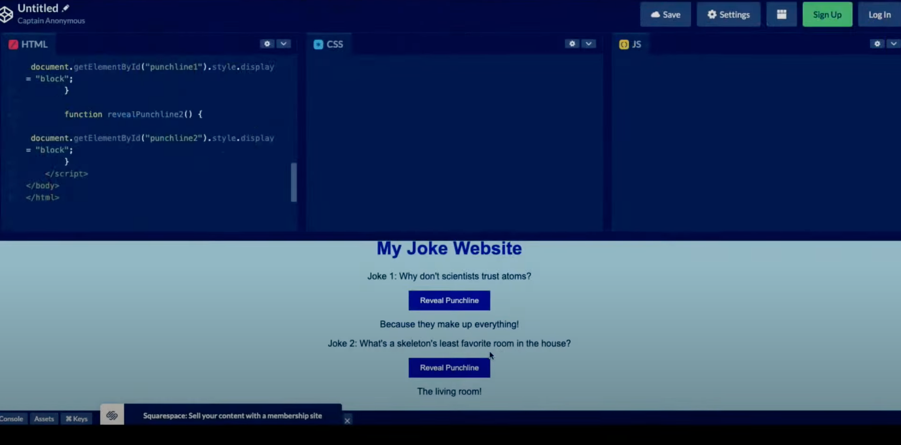
Useful Resources
Clickable Links
Thank you for participating!